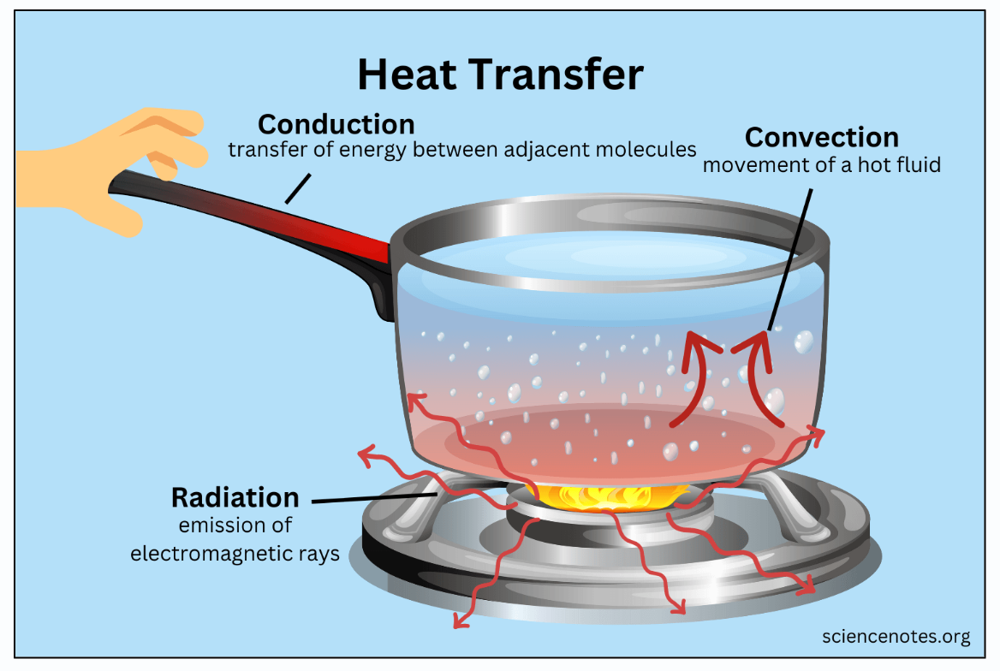
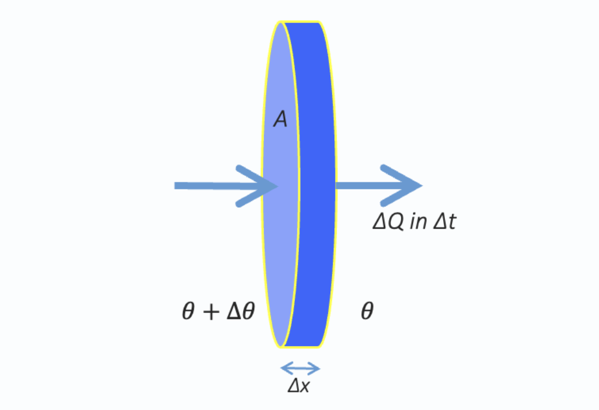
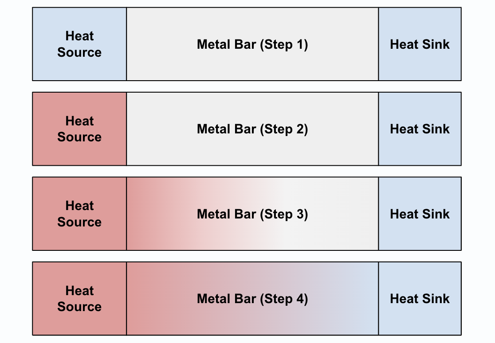
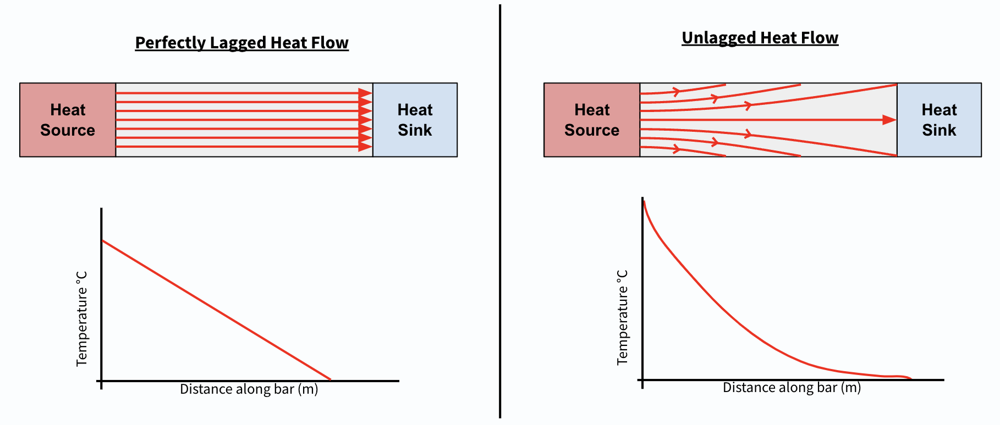
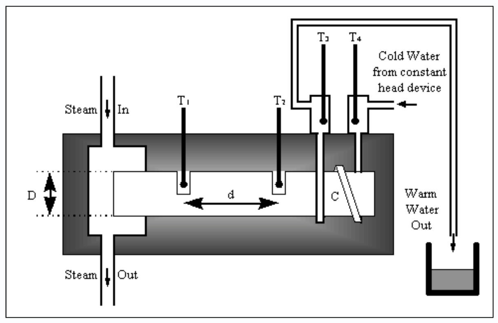
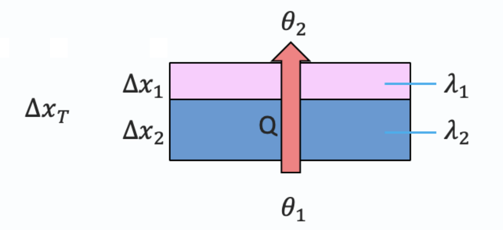

Lecture 6: Thermal Conduction#
Learning Objectives#
By the end of this lecture you should:
Be able to describe the process involved in the transfer of heat.
Be able to qualitatively describe how conduction occurs.
Know and be able to use the thermal conductivity equation.
Know the Searle’s bar equation and use it to find the thermal conductivity of a given material.
Heat Transfer Mechanisms#
There are three mechanisms by which heat may be tranferred: conduction, convection and radiation. The mechanism of heat transfer is broadly dependent on the state of the material. In solids, we tend to find that conduction will dominate, whereas in liquids and gases, the primary mechanism is via convection.

This lecture will focus on conduction as a heat transfer mechanism, but we will look at convection and radiation in the following lecture.
Conduction#
What is actually happening at an atomic level when heat is being conducted by a material?
Metals are examples of good thermal conductors. If we place one end of a metal rod in a flame, the temperature of that end will increase, the temperature of the rest of the rod will also start to increase - why is this? The atoms in the hot end of the rod are at a higher temperature and therefore have a higher kinetic energy. This means that the magnitude of the oscillations of the atomic vibrations is increased compared to the cooler atoms.
The hotter atoms then jostle with the cooler atoms and transfer to them some of their kinetic energy. This process continues along the material allowing the heat energy to be transferred along the bar. It is key to note that the atoms in this scenario do not move along the bar, but the energy does.
One of the reasons that metals are such good conductors is that they are formed of an atomic lattice with many delocalised electrons. Unlike the atoms, these electrons are able to more freely move throughout the bulk of the material, which means they are readily able to carry energy from the hotter regions to the cooler regions.
Coefficient of Thermal Conductivity#
We know that some materials conduct heat more readily than others, but why is this and what other factors contribute? When we are considering how well a material conducts heat, we are effectively trying to determine the rate at which heat flows through the material. As you may have noticed by now, when we are looking at relationships between variables for different materials, we often refer to a comparative variable. In this instance we are going to consider the coefficient of thermal conductivity. Let us derive the relationship for heat flow that lets us determine the coefficient of thermal conductivity for any given material.
To begin with let’s consider the factors that would impact heat flow through a material. We are going to consider a circular disk, with an area \(A\), and a thickness \(dx\), with a temperature gradient across it. The temperature gradient is key as heat must flow from hot to cold. The factors that contribute to the heat flow are:
Area - If we have a larger area for heat to flow through, the rate of heat flow will be increased.
Material thickness, \(\Delta x\) - If the material is thinner, the rate of heat flow will be increased,
Temperature Gradient - If there is a larger temperature, \(\Delta \theta\) across the disk, the rate of heat flow will be increased for a given thickness.

So with this in mind, how would be write an expression for the rate of heat flow, \(\frac{dQ}{dt}\), that takes into account each of these contributing factors:
\( \frac{\Delta Q}{\Delta t} \propto A\frac{\Delta \theta}{\Delta x}.\)
What do we do when we have a proportional relationship? We introduce a constant of proportionality! Therefore:
\( \frac{\Delta Q}{\Delta t} = -\lambda A\frac{\Delta \theta}{\Delta x}.\)
Where \(\lambda\) is equal to the coefficient of thermal conductivity, which has units of W\(\,\)m\(^{-1}\,\)K\(^{-1}\). The negative sign comes from the fact that the temperature gradient is negative, but the heat flow must be positive. The coefficients of conductivity for various materials are tabulated below:
Substance |
\(\lambda\) W\(\,\)m\(^{-1}\,\)K\(^{-1}\) |
|---|---|
Copper |
\(390\) |
Aluminium |
\(220\) |
Ice (@ -4˚C) |
\(2.1\) |
Window Glass |
\(0.93\) |
Water |
\(0.60\) |
Air |
\(0.024\) |
We can see here that there is trend wherein the density of the material is broadly proportional to the coefficient of conductivity. This makes sense when we consider the microscopic process of conduction discussed above. We know that metals are particularly good conductors of heat due to the fact that they are solids and allow molecular vibrations to effectively transmit energy along the material and they have an excess of conduction electrons, which is the same reason that they are such effective conductors of electricity. Temperature also affect the ability of a material to conduct heat. Some materials are good conductors at low temperatures, but as they increase in temperature their physical properties change which means they do not as effectively conduct heat.
Just to reinforce this concept, here we can compare the thermal conductivities of two different materials, copper and fused quartz. We can see that copper is an excellent conductor of electricity and heat, whereas the same is not true for fused quartz. This makes sense as copper has many delocalised electrons, whereas quartz does not.
Material |
Thermal Conductivity W\(\,\)m\(^{-1}\,\)K\(^{-1}\) |
Electrical Conductivity (\(\Omega^{-1}\,m^{-1}\)) |
|---|---|---|
Copper |
\(390\) |
\(5.9 \times 10^{7}\) |
Fused Quartz |
~\(2\) |
~\(1 \times 10^{-17}\) |
Temperature Distribution Along a Bar#
Now that we understand the mechanics of conduction, I would like to briefly make you aware of how the temperature across a metal bar varies during conduction.
To do this I first want you to consider this scenario here. We have a metal bar connected to a heat source and a heat sink. A heat sink is just something that draws heat energy out of a system to help keep it cool.

Initially the heat source and the heat sink are the same temperature.
The heat source is activated and begins to supply heat to the bar. Initially one end of the bar will heat up and heat will slowly be transferred along the length of the bar.
If we were to place temperature probes along the length of the bar we would see that the temperature at each point varies as a function of time.
Eventually a steady state is reached and we obtain our final temperature distribution. The way this distribution looks will be dependent on whether or not the metal bar is unlagged or perfectly lagged.
Note
A temperature distribution is simply a snapshot of what the various temperatures are along the length of the bar. We can plot this with temperature on the \(y\)-axis and the position along the bar on the \(x\)-axis.
Lagged and unlagged heat flow may be represented using heat flow lines, which are simply a useful visualisation of how heat energy is transferred through a medium. The line density is proportional to the heat flow rate and the direction of the line indicates the direction that heat is flowing.

We can see that in the case of unlagged heat flow, the heat flow lines are parallel and all of the heat is transferred from one end of the bar to the other. In this case if we plot the temperature measured by temperature probes across the bar as a function of distance, we will see that there is a linear relationship (i.e. a constant temperature gradient).
This is not the case for the lagged heat flow where the heat flow lines are not parallel and are instead directed towards the sides of the bar. This means that the bar will radiate heat energy away from the sides of the bar. Again if we were to plot the temperature as a function of distance along the bar, we would see that the temperature gradient across the bar is not constant. This makes sense, as the further along the bar you take a measurement, the more surface area the heat has been able to radiate away through.
Now that we understand the difference between lagged and unlagged heating we can consider how we may experimentally determine the coefficient of thermal conductivity of a material using Searle’s Bar Method.
Searle’s Bar Method#
The Searle’s bar method is one for determining the coefficient of thermal conductivity of a material. The method assumes that the bar is lagged so that the temperature gradient across the bar is constant. The setup for the experiment is as follows:

We have a metal bar of unknown thermal conductivity connected to a heat supply, in this instance a continuous flow of steam passing over one end of the bar to heat it, and a heat sink at the opposite end of the bar, in this case a continuous supply of cool water.
We place temperature probes on the bar at two points separated by a known distance, and also place temperature probes in positions that measure the temperature of a known mass of water before it has been and after it has been heated by the bar.
Mathematically, we can define the linear temperature gradient across the bar simply as the change in the temperature for a given length:
\(\frac{\Delta \theta}{\Delta x} = \frac{\theta_2 - \theta_1}{l},\)
where \(l\) is the distance between the two temperature probes. Remember that the temperature of the bar is going from hot to cold, so as you move along the bar the temperature will become cooler. Therefore the temperature gradient should be negative!
Another parameter we can measure from this experiment is the rate at which heat is being transferred to the water that is cooling the far end of the bar. If the temperature of the water changes by \(\Delta \theta\), then the amount of heat required to increase the temperature of the water is simply given by:
\(Q = mc \Delta \theta\)
where \(c\) is the specific heat capacity of water. The rate of heat transfer is simply obtained by dividing both sides of this equation, by the change in time over which the change in temperature took place:
\(\frac{\Delta Q}{\Delta t} = mc \frac{\Delta \theta}{\Delta t},\)
which can be expressed as:
\(\frac{\Delta Q}{\Delta t} = mc \frac{\theta_4 - \theta_3}{\Delta t}.\)
At this point we now have two very familiar expressions, one related to the heat flow and one related to temperature gradient - how might we use these to determine the coefficient of thermal conductivity of the bar? You may recall our the equation we introduced at the start of the lecture for the heat flow through a material:
\( \frac{\Delta Q}{\Delta t} = -\lambda A\frac{\Delta \theta}{\Delta x}.\)
The thickness of the material in this case is simply equal to the distance separating the two temperature probes on the bar. If we substitute our new expressions in we get:
\( mc \frac{\theta_4 - \theta_3}{\Delta t} = -\lambda A\frac{\theta_2 - \theta_1}{l},\)
which can then be rearranged to make \(\lambda\) the subject:
\(\lambda = - \frac{mcl}{A\Delta t}\frac{\left(\theta_4 - \theta_3 \right)}{\left(\theta_2 - \theta_1 \right).}\)
Warning
You are expected to know and understand this method for determining the coefficient of thermal conductivity of a material (including the derivation). It would be worth working through the steps of the derivation above yourself to ensure that it makes sense to you.
Thermal Conductivity: Combined Materials#
The final thing that we are going to consider in this lecture is how we calculate the thermal conductivity of composite materials, e.g. one layer of material placed on top of another as shown below:

There is a simple formula for doing this, essentially the ratio of the total thickness of the material to the total coefficient of heat conductivity is given as the sum of the same for each individual layer:
\(\Delta x_T\Delta \lambda_t = \frac{\Delta x_1}{\Delta \lambda_1} + \frac{\Delta x_2}{\Delta \lambda_2} + \frac{\Delta x_n}{\Delta \lambda_n}, \)
where \(\Delta x_T\) represents the total thickness of the combined materials, \(\lambda_T\) represents the overall thermal conductivity coefficient of the composite material and the subscript indicates which layer of material is being referred to. As such the total heat flow through a compound material can be determined using:
\(\frac{\Delta Q}{\Delta t} = -\lambda A \frac{\Delta \theta}{\Delta x}, \)
which can also be expressed as:
\( \frac{\Delta Q}{\Delta t} = -\frac{\lambda_T}{\Delta x_T} A \Delta \theta,\)
You may have spotted that the fractional coefficient on the right handside of the equation is simply the inverse of the first equation we introduced for determining the thermal conductivity coefficient of the compound material. As such we can rearrange the equation above to:
\( \frac{\Delta Q}{\Delta t} = - \frac{A \Delta \theta}{\left(\frac{\Delta x_T}{\lambda_T}\right)},\)
and hence:
\( \frac{\Delta Q}{\Delta t} = - \frac{A \Delta \theta}{\left(\frac{\Delta x_1}{\Delta \lambda_1} + \frac{\Delta x_2}{\Delta \lambda_2} + \frac{\Delta x_n}{\Delta \lambda_n}\right)}.\)
Note
Units have been omitted in calculations below for simplicity. Ensure you know what each value represents.
Question 1#
A window is \(2.200\),m wide and \(0.9000\,\)m tall and made from glass which has a coefficient of thermal conductivity of \(0.7500\,\)W\(\,\)m\(^{-1}\,\)K^{-1}. If the rate of heat flow through the window is \(2723\,\)W when the temperature inside the \(24.00\)°C and the temperature outside is \(2.000\)°C, calculate the thickness of the glass.
Q1 Solution
This question simply requires us to rearrange the heat flow equation and solve for \(\Delta x\):
\( \frac{\Delta Q}{\Delta t} = -\lambda A\frac{\Delta \theta}{\Delta x},\)
\( \Delta x = -\lambda A \Delta \theta \cdot \frac{\Delta x}{\Delta Q},\)
\( \Delta x = -\lambda A \left( \theta_f - \theta_i\right) \cdot \frac{\Delta x}{\Delta Q}.\)
Plugging in the values provided gives:
\(\Delta x = -0.75 (2.2 \times 0.9) \cdot (2 - 24) \cdot \frac{1}{2723},\)
\(\Delta x = 0.012\, m.\)
Note: We did not need to convert from ˚C to Kelvin for this question as we are working with a temperature difference, which would be the same regardless of which temperature scale was being used.
Question 2#
A flat roof of area \(40\,\)m\(^2\) is made from \(60\,\)mm thick timber with a thermal conductivity coefficient of \(0.20\,\)W\(\,\)m\(^{-1}\,\)K\(^{-1}\).
a) Calculate the heat flow through the roof when the building is heated to \(20\)°C and the external temperature is \(-5.0\)°C.
b) The loft is then insulated with \(150\,\)mm thick fiberglass insulation that has a thermal conductivity coefficient of \(0.060\,\)W\(\,\)m\(^{-1}\,\)K\(^{-1}\). Calculate the heat flow through the insulated roof.
Q2a Solution
Again, we are going to use the heat flow equation. This is a simple case of simply substituting in the correct numbers:
\( \frac{\Delta Q}{\Delta t} = -\lambda A\frac{\Delta \theta}{\Delta x},\)
\( \frac{\Delta Q}{\Delta t} = -0.2 \cdot 40\cdot \frac{(-5 - 20)}{0.06},\)
\( \frac{\Delta Q}{\Delta t} = 3300\, W.\)
Q2b Solution
For this part of the question we now have a composite material, therefore we must use the modified heat flow equation:
\( \frac{\Delta Q}{\Delta t} = - \frac{A \Delta \theta}{\left(\frac{\Delta x_1}{\Delta \lambda_1} + \frac{\Delta x_2}{\Delta \lambda_2}\right)},\)
\( \frac{\Delta Q}{\Delta t} = - \frac{40 \cdot (-5 - 20)}{\left(\frac{0.06}{0.2} + \frac{0.15}{0.06}\right)},\)
\( \frac{\Delta Q}{\Delta t} = 360\, W. \)